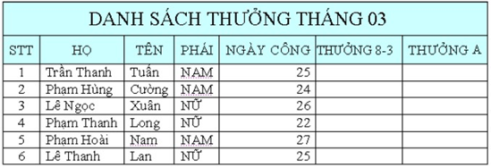

Bài tập Excel 5:
Nhập và trình bày bảng tính như sau:

Yêu cầu:
Câu 1: Điền dữ liệu cho THƯỞNG 8-3 cho nhân viên Nữ là 200 000, còn lại không được thưởng.
Câu 2: THƯỞNG A cho nhân viên có ngày công >=24 là 300 000, còn lại không được thưởng.
Câu 3: Thêm vào bảng cột THƯỞNG B, biết rằng, những nhân viên Nam có ngày công >26 hoặc nhân viên Nữ có ngày công >25 thì được thưởng 500 000.